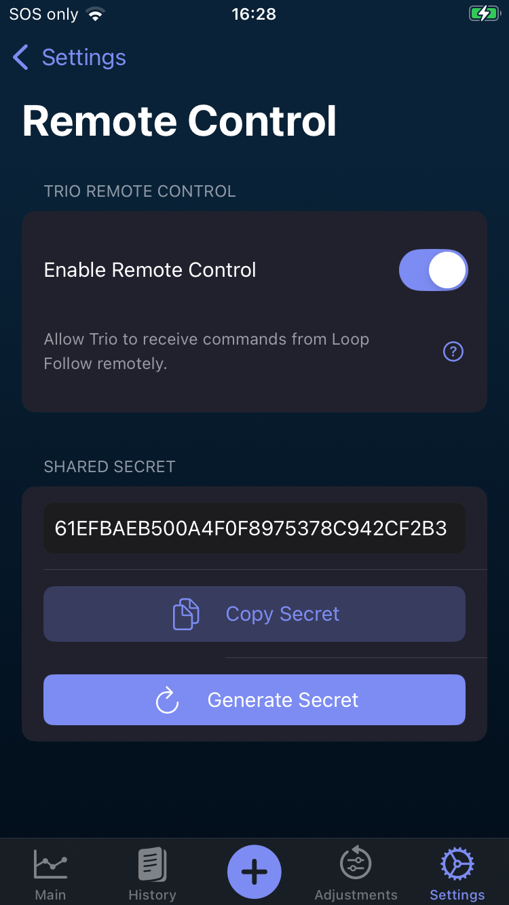
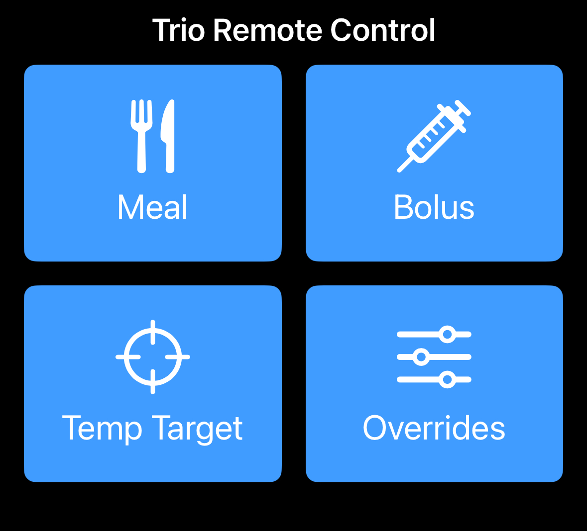
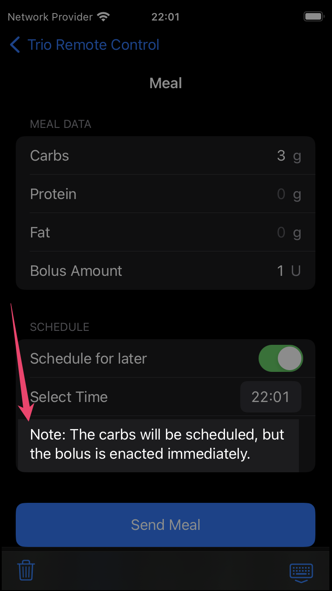
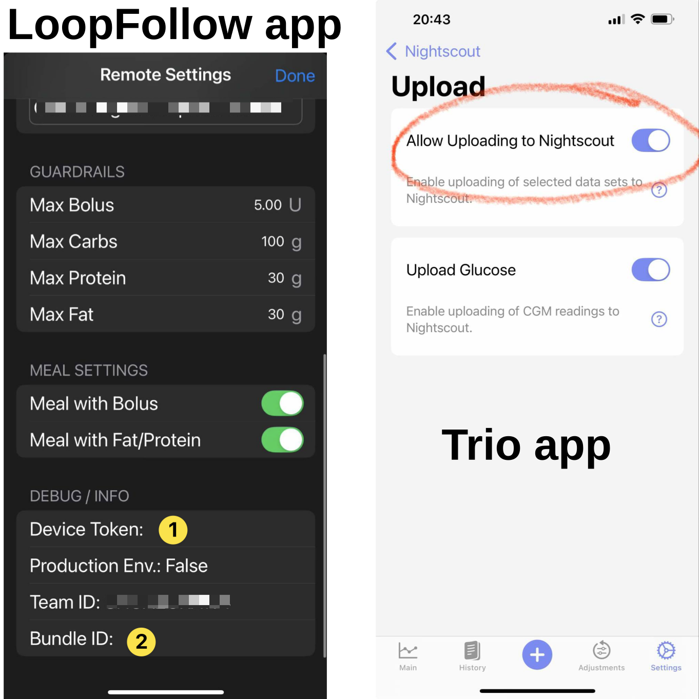
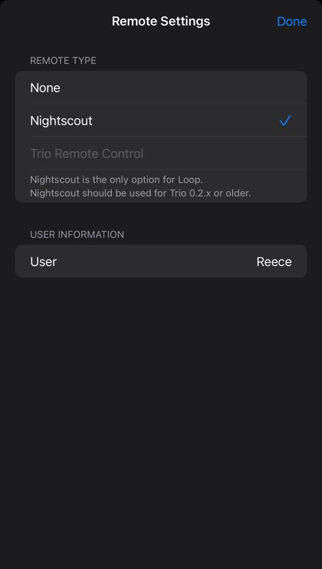
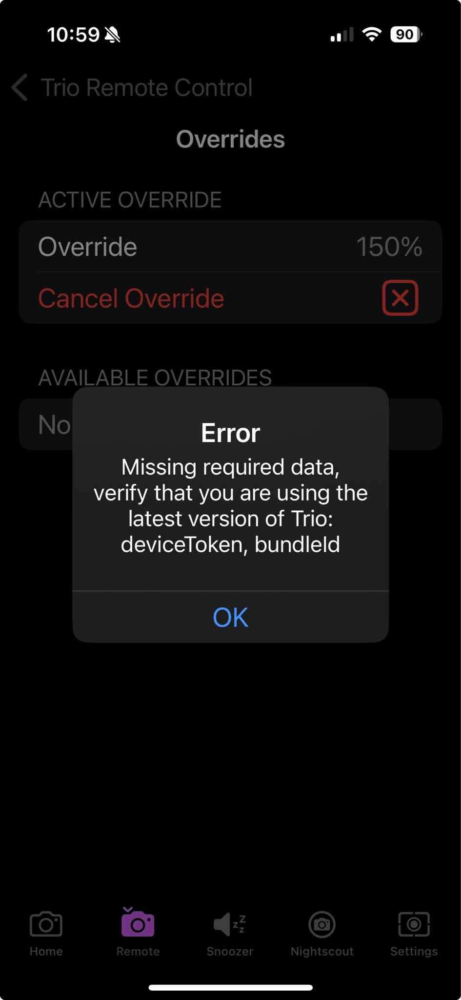

Remote Control Overview
Trio can accept remote commands from Nightscout or from LoopFollow. There are a variety of options, but the final control of whether remote commands will be enacted rests with the Trio user. They can enable or disable remote control.
Nightscout version must be 15.0.2 or newer
To properly display the OpenAPS pill with Trio 0.5.x (or newer), your Nightscout version must be 15.0.2 (or newer). If you do not see the expected treatments or pills in the Nightscout dashboard, follow the steps to Configure for OpenAPS.
The most powerful arrangement, for Trio 0.5.x (or newer), is to configure the LoopFollow app to use the Trio Remote Control (TRC) setting.
The limited use of remote control with Nightscout, i.e., entry of Carb Correction and Temporary Targets when Careportal is authenticated, continues to be supported with Trio.
| Nightscout URL or App |
Options |
| Careportal |
Carb Correction
Temporary Target
Temporary Target Cancel |
Additional remote capabilities are offered for Trio using the LoopFollow app with these versions:
- Trio 0.5.x (or newer)
- LoopFollow version 2.4.0 (or newer)
| LoopFollow Remote Type |
Options |
| Nightscout |
Set and Cancel Temp Target |
| Trio Remote Control |
Meal (Carbs or Carbs & Bolus)
Bolus
Temp Target
Overrides |
How does this differ from Trio 0.2.x?
Trio can use Nightscout Careportal to enter Carb Correction, and start and cancel Temporary Target.
- This was available in Trio 0.2.x and continues to be available in Trio 0.5.x (or newer).
Trio 0.2.x supported other remote options (using announcements via Careportal).
- Those options were replaced by the more secure Trio Remote Control for Trio 0.5.x (or newer)
- Using announcements to provide remote control of the Trio phone is no longer supported
Trio Remote Control
Default: OFF
Remote control must be enabled on the Trio phone or no remote information is accepted by the Trio phone.
You can search for this screen in Trio settings or go through the sequence: Trio, Settings, Features, Remote Control.
Once Remote Control is enabled, a Shared Secret is available. This is only used if you want to Configure LoopFollow Trio Remote Control.

When Remote Control is enabled on the Trio app and the LoopFollow phone is properly configured, you can add carbs, send boluses, set or cancel overrides or temporary targets from the LoopFollow phone to the Trio phone via Apple push notifications.
The SHARED SECRET should be copied from the Trio phone and added to the Shared Secret row of the LoopFollow Remote Settings screen as part of the configuration for using LoopFollow.
Important
The ability for the Trio app to be remotely controlled will be disabled when Enable Remote Control is turned OFF, even if you have LoopFollow configured with the correct shared secret or your Nightscout URL has Careportal access. This is for the protection of the Trio user, so that they always are the primary controller of their insulin dosing app.
LoopFollow Overview
The most flexible remote control for a caregiver to help their loved one is to use the LoopFollow app on the caregiver's phone. It is available only for iOS devices: iPhone, iPad or Mac.
The remote commands are sent from the LoopFollow phone to the Trio phone using Apple Push Notifications. A real-time response is returned to the LoopFollow phone for most cases with either success or failure, with the reason.
The documentation for LoopFollow can be reached by typing loopfollowdocs.org in a browser.
To configure LoopFollow for Trio Remote Control, read these two pages in detail:
Use LoopFollow Trio Remote Control
Once the LoopFollow phone is configured, and while the Trio phone is handy, test sending Remote Commands. It is good to also have a browser open with the Nightscout site displayed.
Remember to give the system time to update.
The sequence for a remote command is
- LoopFollow sends the command via Apple Push Notifications (APNS)
- Apple Push Notifications passes the command to Trio
- Trio performs additional safety checks and either accepts or rejects the command
- Trio sends a real-time response via Apple Push Notifications
- Apple Push Notifications sends the response to the LoopFollow phone
Trio also uploads the treatments to Nightscout and LoopFollow presents those treatments on the LoopFollow mainb screen.
LoopFollow also provides logs and reports for these treatements.

Remote Meal
The Remote Meal command allows you to log carbohydrates (and optionally fat and protein) to Trio from LoopFollow, with or without an accompanying bolus.
How to Send a Remote Meal
- Open LoopFollow and tap the Remote Control button
- Select "Meal" from the command options
- Enter the meal details:
- Carbs (required): Grams of carbohydrates
- Fat (optional): Grams of fat
- Protein (optional): Grams of protein
- Bolus (optional): Units of insulin to deliver with the meal
- Schedule (optional): Time to log the carbs (for pre-bolusing)
- Tap "Send" to transmit the command
What Happens When Trio Receives a Meal Command
-
Validation: Trio checks that:
- At least one macronutrient (carbs, fat, or protein) is provided
- Carbs don't exceed your Max Carbs setting
- Fat doesn't exceed your Max Fat setting
- Protein doesn't exceed your Max Protein setting
- No newer carb entries exist (prevents accidental duplicates)
-
Carb Entry Creation: Trio creates a carb entry with:
- The macronutrients you specified
- A note: "Remote meal command"
- FPU (Fat Protein Units) enabled if fat OR protein is present
- Scheduled time (if provided)
-
Bolus Delivery (if bolus amount was included):
- The bolus is delivered immediately (even if the meal is scheduled)
- Bolus validation checks are performed (see Remote Bolus section)
-
Response Notification: Trio sends a success or failure notification to LoopFollow via APNS
-
Upload to Nightscout: The meal entry is logged to Nightscout for your records
Scheduled Meals with Bolus
When entering meals and choosing to schedule the meal, any bolus included in the meal is enacted immediately. Only the carb entry is entered according to the schedule.
Safety Features
- Duplicate Prevention: Won't log carbs if a newer entry already exists
- Limit Enforcement: Respects your Max Carbs, Max Fat, and Max Protein settings
- FPU Calculation: Automatically enables Fat Protein Units for low-carb, high-fat/protein meals
- Nightscout Logging: All remote meals are logged for audit trail
Use Cases
- Pre-bolusing: Schedule a meal for 15-30 minutes in the future while delivering insulin now
- Macronutrient Tracking: Log fat and protein for better extended bolus calculations
- Meal + Bolus: Deliver a complete meal bolus remotely in one command
- Caregiver Support: Parents can log meals for children at school
When entering meals and choosing to schedule the meal, any bolus included in the meal is enacted immediately. Only the carb entry is entered according to the schedule.

Remote Bolus
The Remote Bolus command allows you to deliver insulin remotely via LoopFollow. This is one of the most powerful remote features and includes multiple safety checks.
How to Send a Remote Bolus
- Open LoopFollow and tap the Remote Control button
- Select "Bolus" from the command options
- Enter the bolus amount in units (U)
- Tap "Send" to transmit the command
What Happens When Trio Receives a Bolus Command
-
Validation: Trio performs comprehensive safety checks:
- Bolus amount is provided and greater than 0
- Bolus amount doesn't exceed your Max Bolus setting
- Current IOB (Insulin on Board) is calculable
- Current IOB + bolus amount doesn't exceed Max IOB
- Boluses delivered since the command was sent total less than 20% of the requested amount (equality is rejected)
- APSManager is available and functioning
-
Insulin Delivery: If all checks pass:
- Trio sends the bolus command to your insulin pump
- The pump delivers the insulin
- Trio monitors the delivery for completion
-
Response Notification: Trio sends a success or failure notification to LoopFollow via APNS
-
Upload to Nightscout: The bolus is logged to Nightscout with:
- Amount delivered
- Timestamp
- Note indicating it was a remote command
Safety Features
Max Bolus Protection
Your Max Bolus setting (configured in Trio settings) prevents delivery of dangerously large boluses. A remote bolus request exceeding this limit will be rejected.
Example: If Max Bolus = 10 U, a remote request for 12 U will fail with error message.
Max IOB Protection
Trio calculates your current Insulin on Board and ensures the new bolus won't exceed your Max IOB safety limit.
Formula: Current IOB + Requested Bolus ≤ Max IOB
Example:
- Current IOB: 8 U
- Max IOB: 12 U
- Remote bolus request: 5 U
- Result: REJECTED (8 + 5 = 13 U, which exceeds 12 U limit)
Duplicate Bolus Prevention
Remote bolus validation sums delivered boluses since the original command timestamp. It rejects a request when that total is greater than or equal to 20% of the requested bolus. It does not use an individual-bolus comparison or a fixed ten-minute lookback.
For a synthetic 5 U command, the threshold is 1 U. Two boluses delivered after the command was sent, totaling exactly 1 U, trigger rejection. A bolus delivered before the command timestamp is outside this particular lookback. This example explains the validation rule, not a suggested dose.
The same validator is used by Shortcuts, whose caller instead uses the default six-minute lookback. Command age/expiry validation is a separate check.
Time Window Validation
All remote commands include a timestamp. Trio rejects commands that are:
- More than 10 minutes old (prevents replay attacks)
- From the future (prevents clock manipulation)
Error Messages
If a remote bolus fails, you'll receive a notification explaining why:
| Error |
Meaning |
Action |
| "Bolus amount exceeds max bolus" |
Requested bolus > Max Bolus setting |
Reduce bolus amount or increase Max Bolus in settings |
| "IOB would exceed max IOB" |
Current IOB + bolus > Max IOB |
Wait for IOB to decrease, or increase Max IOB |
| "Recent bolus detected" |
Boluses since the command timestamp total at least 20% of the request |
Inspect delivered doses and command timing; do not resend based only on a timer |
| "APSManager unavailable" |
Trio can't access pump |
Check Trio app is running and pump is connected |
| "Command too old" |
Timestamp > 10 minutes ago |
Check phone clocks are synchronized; resend command |
Use Cases
- Meal Boluses: Deliver insulin for meals when away from phone
- Correction Boluses: Correct high blood sugar remotely
- Caregiver Support: Parents can dose insulin for children
- Emergencies: Deliver insulin if user can't access their phone
Important Safety Note
Remote bolus is a powerful feature that delivers real insulin. Always:
- Verify the bolus amount before sending
- Check current blood glucose and IOB before sending
- Ensure the user is aware a bolus is being sent
- Have emergency glucagon available
- Never use remote bolus as a prank or without authorization
Temp Target
The Temp Target command allows you to set or cancel temporary glucose targets remotely via LoopFollow.
How to Set a Remote Temp Target
- Open LoopFollow and tap the Remote Control button
- Select "Temp Target" from the command options
- Enter the temp target details:
- Target: Desired glucose target in mg/dL (or mmol/L)
- Duration: How long the target should be active (in minutes)
- Tap "Send" to transmit the command
What Happens When Trio Receives a Temp Target Command
-
Validation: Trio checks that:
- Target value is provided and valid
- Duration is provided and greater than 0
-
Temp Target Creation: Trio creates a temporary target with:
targetTop and targetBottom both set to the specified target- Duration in minutes
- Custom name indicating it's a remote target
- Marked as a "local" entry
-
Storage: The temp target is saved to Trio's temp target storage
-
Sync to Nightscout: The temp target is uploaded to Nightscout
-
UI Update: Trio posts notifications to update the UI immediately
-
Response Notification: LoopFollow receives confirmation
How to Cancel a Remote Temp Target
- Open LoopFollow and tap the Remote Control button
- Select "Cancel Temp Target" from the options
- Tap "Send" to transmit the command
What Happens When Canceling
- Fetch Active Targets: Trio retrieves all currently active temp targets
- Create End Records: For each active temp target, Trio creates a
TempTargetRunStored record marking it as ended
- Disable All: All active temp targets are marked as disabled
- Sync to Nightscout: Changes are uploaded
- UI Update: Trio interface updates to show no active temp targets
Common Temp Target Values
| Target |
Use Case |
| 80-100 mg/dL |
Before meals (tighter control) |
| 110-120 mg/dL |
Sleeping/overnight (prevent lows) |
| 140-160 mg/dL |
Exercise (prevent lows) |
| 120-130 mg/dL |
After meals (less aggressive corrections) |
Temp Targets and Algorithm Behavior
Temporary targets affect how Trio delivers insulin:
- Higher targets → Less aggressive insulin delivery, fewer/smaller SMBs
- Lower targets → More aggressive insulin delivery, more/larger SMBs
- Temp targets override your normal target glucose setting
- Trio respects your safety limits (Max IOB, Max SMB) regardless of temp target
Use Cases
- Exercise: Set higher target before/during exercise to prevent lows
- Sleep: Set higher target at bedtime for peace of mind
- Pre-meal: Set lower target before eating to achieve tighter control
- Illness: Adjust targets when sick
- Cancel: Return to normal targets anytime
Overrides
The Override command allows you to activate or cancel override presets remotely via LoopFollow. Overrides are powerful tools that simultaneously adjust multiple settings (insulin sensitivity, basal rates, carb ratios, and targets) based on predefined presets.
Prerequisites
Before using remote overrides, you must:
-
Create Override Presets in Trio:
- Go to Trio Settings → Overrides
- Create and name your override presets (e.g., "Exercise", "Sick Day")
- Configure the percentage adjustments for each preset
-
Configure LoopFollow with the exact preset names
How to Start a Remote Override
- Open LoopFollow and tap the Remote Control button
- Select "Start Override" from the command options
- Select the override preset from the dropdown (must match a preset name in Trio)
- Tap "Send" to transmit the command
What Happens When Trio Receives a Start Override Command
-
Validation: Trio checks that:
- Override name is provided and not empty
- Override name matches an existing preset (exact match, case-sensitive)
-
Fetch Presets: Trio retrieves all override presets from storage
-
Find Matching Preset: Searches for a preset with the exact name specified
-
Disable Other Overrides: All currently active overrides are disabled first
-
Enable Requested Override: The matching override preset is:
- Enabled
- Timestamp set to current time
- Marked as not yet uploaded to Nightscout
-
Save to Core Data: Changes are persisted
-
UI Update: Trio posts notifications to refresh the UI
-
Upload to Nightscout: The active override is logged
-
Response Notification: LoopFollow receives confirmation
How to Cancel a Remote Override
- Open LoopFollow and tap the Remote Control button
- Select "Cancel Override" from the options
- Tap "Send" to transmit the command
What Happens When Canceling
- Fetch Active Overrides: Trio retrieves all currently active overrides
- Create End Records: For each active override, Trio creates an
OverrideRunStored record marking it as ended
- Disable All: All active overrides are marked as disabled
- Sync to Nightscout: Changes are uploaded
- UI Update: Trio returns to normal settings
How Overrides Work
Overrides modify your therapy settings by percentage:
| Setting |
Override Adjustment |
Effect |
| Insulin Sensitivity (ISF) |
Percentage multiplier |
50% = half the insulin, 200% = double the insulin |
| Basal Rates |
Percentage multiplier |
150% = 1.5x normal basal |
| Carb Ratios |
Percentage multiplier |
75% = less insulin per carb |
| Target Glucose |
Override target value |
Completely replaces normal target |
Example "Exercise" Override:
- ISF: 150% (more sensitive, less insulin)
- Basal: 75% (reduced basal delivery)
- CR: 120% (less insulin for carbs)
- Target: 140 mg/dL (higher target to prevent lows)
Example "Sick Day" Override:
- ISF: 50% (more resistant, more insulin)
- Basal: 150% (increased basal delivery)
- CR: 80% (more insulin for carbs)
- Target: 110 mg/dL (tighter control)
Override Preset Name Matching
Exact Match Required
The override name sent from LoopFollow must exactly match a preset name in Trio:
- Case-sensitive: "Exercise" ≠ "exercise"
- Spacing matters: "Sick Day" ≠ "SickDay"
- Spelling must be exact
If no match is found, the command will fail with an error message.
Use Cases
- Exercise: Activate exercise mode remotely before/during physical activity
- Illness: Switch to sick day settings when user is unwell
- Travel: Adjust settings for time zone changes or schedule disruptions
- Stress: Modify insulin delivery during stressful periods
- Menstrual Cycle: Adjust for hormonal changes
- Cancel: Return to normal settings anytime
Safety Considerations
- Overrides are powerful: They affect multiple settings simultaneously
- Test first: Test override presets locally before using remotely
- Monitor closely: Watch glucose trends closely when an override is active
- Duration: Consider setting automatic duration limits on override presets
- Communication: Ensure the user knows when an override is activated remotely
Troubleshooting
| Issue |
Cause |
Solution |
| "Override not found" |
Name doesn't match any preset |
Check spelling and capitalization in both Trio and LoopFollow |
| "Failed to enable override" |
Trio can't access storage |
Restart Trio app and try again |
| Override not taking effect |
Override successfully activated but settings unchanged |
Verify the override preset has non-zero percentage adjustments configured |
Troubleshooting
This section covers known troubleshooting issues:
The Nightscout version must be 15.0.2 (or newer) to properly display the OpenAPS pill with Trio 0.5.x (or newer). Check your revision: Nightscout URL, Menu, scroll to bottom and examine the About section.
If you transitioned from the Loop app, you must make some modifications to Nightscout before you will be successful viewing your Trio data in your Nightscout site.
In Nightscout, you need to modify these config vars:
| Config Var |
Loop |
Trio |
ENABLE |
loop |
openaps |
SHOW_PLUGINS |
loop |
openaps |
SHOW_FORECAST |
loop |
openaps |
Remember to restart the Nightscout server (restart dynos) after updating these variables.
Stop Nightscout access from the Loop app
If you were previously running the Loop app:
- Remove Nightscout from Loop Services
- Add Nightscout credentials to Trio
- You need the URL and the API_SECRET.
In addition to this step, you may need to force the profile (from Trio) to upload to Nightscout and overwrite the one stored as the default profile in Nightscout.
Update Profile
If you were previously running the Loop app, take the actions in the previous section and then force the profile to update.
To force a profile to update to Nightscout, go to the Trio app and toggle Allow Uploading to Nightscout off (disable) and then enable it again.
Once the user has toggled "Allow Uploading to Nightscout", LoopFollow needs to be refreshed (pull down glucose value to refresh) or re-started in order to fetch the correct information. LoopFollow will refresh eventually, but most users are impatient.
If the Debug Info in LoopFollow is missing a Device Token or a Bundle ID, as shown on the left side of the graphic, you need to make sure the Loop app is no longer uploading to Nightscout and force the profile to update.

Trio Remote Control Stops Working
Other signatures that you need to force the update are shown in the graphics below - for both these instances, Trio Remote Control (TRC) was working with LoopFollow and then stopped working:
| TRC Option Not Allowed |
TRC Error |
 |
 |
Build LoopFollow
The LoopFollowDocs have complete build instructions:
1.0.2 source references
- F04 — Remote duplicate-bolus guard uses command time and a cumulative inclusive threshold